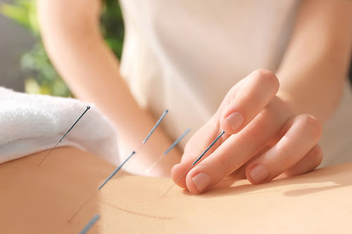
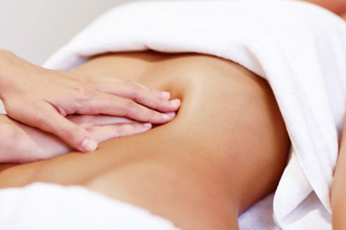

ACUPUNTURA  Técnica medicinal chinesa que insere agulhas nos canais de energia do paciente.
FENG SHUI Corrige e equilibra as energias do ambiente beneficiando seus usuários.
DRENAGEM Ativa circulação sanguínea, elimina toxinas, diminui retenção de líquidos e desfaz edemas.
QUIROPRAXIA Técnica de manipulação vertebral que melhora o estado de saúde através do sistema nervoso.